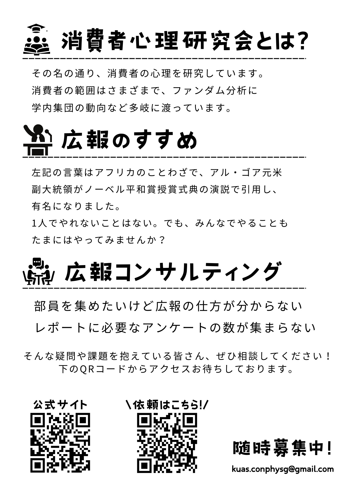
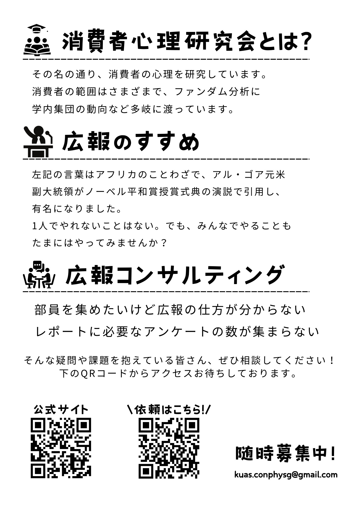

消費者心理研究会
私たちはその名の通り、消費者の心理を研究しています。
消費者の範囲はさまざまで、ファンダム分析に学内集団の動向など多岐に渡っています。
・部員を集めたいけど広報の仕方が分からない
・ポスターを作りたいけどそもそもポスターってどうやって作るの？
そんな疑問や課題を抱えている団体のみなさん、ぜひ相談してください。
過去の活動
ここに過去に作成したポスターを掲載しています。
 

研究会について
代表者・連絡先など
代表者: 中間 さや夏
連絡先: kuas.conphysg@gmail.com
FAQ
よくある質問
質問1:
質問2: